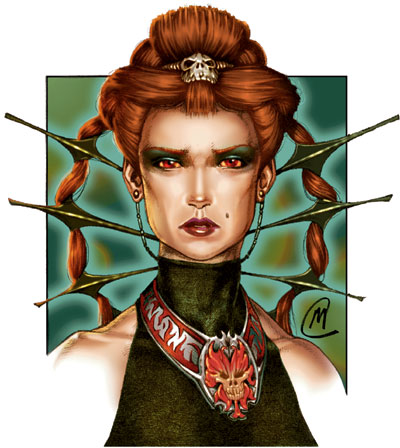
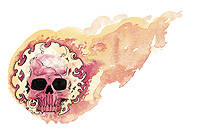

维婕斯（Wee Jas）

女巫神，红宝石术士，冷酷女神，死亡守护者
中等神力
圣徽：赤焰骷髅

居住位面：Acheron
阵营：守序中立
神职：死亡，魔法，空虚，秩序
信徒：死灵师，法师
牧师阵营：守序邪恶，守序善良，守序中立
领域：死亡，秩序，魔法
偏好武器：匕首
魔法与死亡之女神维婕丝，大多时候被描述成一位着一身华丽法衣，佩带着以头骨为装饰的首饰，并美丽的足以使人晕倒的女性。维婕丝是一位非常严格的神祗，她要求她的信徒和追随者们对她绝对的服从。她很尊重博卡布，但两人并不是同盟关系。
教义
维婕丝一直力促人们使用魔法和魔法物品（尽管很多她的信徒更喜欢去“创造”魔法物品）。
维婕丝告诉她的追随者们，魔法是理解一切事物的桥梁。维婕丝承诺，通过对魔法的研究，人们将可以获得力量，安全，秩序，对世界的理解与对命运的掌控。她劝诫她的追随者们要尊敬前人，因为正是他们将自己的知识遗留给后人作基础，将自己的死留给后人作发展的空间。她告诉自己的信徒，死亡是世上永不可抗力，但她向他的信徒承诺，他们留下的知识与思想则永远会后人记忆在心中，并成为他们荣誉的勋章。
神职人员与神殿
维婕丝的教会有着非常严格的教阶等级制度。她的牧师以严格遵守纪律并绝对服从上级著称。维婕丝的牧师经常裁定各类学术辩论，在魔法相关的事务上给予参谋，参与魔法奇案的调查，研究制造魔法物品，以及主持葬礼仪。低阶牧师们随时都要听从高阶牧师的一切命令。他们一般穿着黑色或灰色的祭袍。
维婕丝的神殿数目很少，而且相隔都很远，但她的信徒中有许多强大的术士和法师（特别是死灵师）。大多数的维婕丝神殿处于墓地或是陵顷附近，特别是埋葬有死去的强大发誓的墓地或陵顷。神殿中往往建有奥术图书馆，并内藏了大量过去属于那些强大法师的物品和书籍。
维婕丝
法师20级/牧师20级
中体型外界生物
神格等级：15
生命骰：20d8+140（外界生物）加20d4+140（法师）加20d8+140（牧师）（820hp）
先攻调整值：+12（+8敏捷，+4精通先攻）
速度：60尺
防御等级：70（+8敏捷，+15神格等级，+28天生防御，+9偏转）
攻击加值：+5秩序幽冥锐锋匕首 +69/+64/+59/+54近战；或者法术 +63近战接触或 +64远程接触
伤害加值：+5秩序幽冥锐锋匕首 1d4+12/19-20；或者使用法术
占据/威胁范围：5尺*5尺/5尺
特殊攻击：每日20次斥责不死生物，领域神力，超凡神格能力，类法术能力
特性：神格免疫，伤害减免 50/+4，火元素伤害抗力35，神术自发性施法，理解、交谈及阅读所有语言并直接于任何15里内的生命存在交谈，远程沟通，神祗国度，随意无误传送，随意位面旅行，魔宠（渡鸦），SR47，神力光环（1500尺，DC34）
豁免调整值：坚韧 +54，反射 +55，意志 +59
能力值：力量 24，敏捷 27，体质 24，智力 47，感知 34，魅力 29
技能调整值：炼金术 +86，估价 +66，唬骗 +57，专注 +85，手艺（造纸） +96，手艺（装订图书） +96，交涉 +64，易容 +47，收集信息 +44，医疗 +29，威吓 +51，知识（奥术） +96，知识（历史） +89，知识（宗教） +96，知识（位面） +76，知识（不死生物） +96，聆听 +76，潜行 +66，专业（草药） +64，专业（书记） +90，探知 +96，搜索 +77，察言观色 +77，辨识法术 +96，侦察 +76，技能检定掷骰自然结果总是取20
专长：制造药水，制造权杖，制造法杖，制造魔杖，制造奇物，闪避，法术强效，法术增远，闪避物质，法术延时，额外驱散（*2），锻造戒指，高级法术渗透，法术升阶，精通先攻，法术极效，机动，法术远触，抄录卷轴，法术默发，法术渗透，法术定发，武器娴熟（匕首），武器专攻（匕首）
神格免疫：属性伤害，属性吸取，酸，冷，即死效果，疾病，瓦解，电，能量吸取，心智影响效果，麻痹，毒，睡眠，震慑，变形，监禁，放逐。
超凡神格能力：改变形态，改变现实，改变大小，奥术熟稔，自动超魔（牧师法术瞬发），天神下凡，神力护盾，神力施法，能量风暴（负能量），能量风暴（正能量），死亡之手，即时法术反制，了解死亡，生命与死亡（无须休息），看破魔法，法师法术自发性施法
领域神力：每日15次死亡之触（掷20d6，若被触目标没有大于等于其数值的生命值，则死亡）；施展秩序领域法术时，施法者等级加1
类法术能力：维婕丝可以相当于施法者等级为26级使用秩序领域类法术能力，以相当于施法者等级为25使用其他类法术能力。类法术能力的基本豁免DC为34+法术等级。Animate dead,antimagic field,calm emotions,cause fear,create greater undead,creat undead,death knell,death ward,destruction,dictum,dispel chaos,dispel magic,hold monster,idenlify,imbue with spell ability,magic circle against chaos,Mordenkainen's disjunction,Nystul's undetectable aura,order's wrath,protection from chaos,protection from spells,shield of law,slay living,spell resistance,spell turning,summon monster IX（仅限以秩序领域法术施展），wail of the banshee
牧师每日神术（0-12级）：6/9/9/9/9/8/7/7/7/6/2/2/2；基础DC=22+法术等级
法师每日奥术（0-18级）：4/9/9/8/8/8/8/7/7/7/4/3/3/3/3/2/2/2/2；基础DC=28+法术等级
财产：维婕丝拥有一把名为“破灭”的 +5秩序幽冥锐锋匕首。此匕首制造施法者等级为25，重1磅。
其他神格能力
作为一个中等神力，维婕丝在任何掷骰中自动取20，维婕丝在攻击检定和豁免检定掷骰自然值出1时，并不视作必然失败，而是视作普通失败。他是不朽的。
感知：维婕丝可以看见，听见，触摸和嗅到15哩的距离。作为一个标准动作，她能够感知到任何动物，她的信徒，圣迹，与她有关的物体和任何她的名字在一个小时内被说出的地点周围15哩内的一切。她能够立即将她的感知延伸到10个地方。她立即能够在2个地方阻止神格等级等于或者小于她的神的感知力量，时间最长可达15个小时。
神职感知：维婕丝可以在事情的发生前15周，发生后15周，或发生时立刻感知到任何活物的死亡。
自动动作：维婕丝能够以一个自由动作使用其手艺（造纸），手艺（装订图书），知识（奥术），知识（历史），知识（宗教），知识（位面），知识（不死生物），专业（草药），专业（书记），或者辩识法术等技能，只要该项任务的DC在25或者更低。她每轮能够完成10个类似的自由动作。
创造魔法物品：维婕丝能创造出各种魔法物品，只要物品的交易价格不超过200000GP。
化身
维婕丝的化身往往化形为美丽的女人，但在年龄和样貌上不尽相同就是了。她派遣她的化身去参加著名法师们的葬礼，并去见证收割一般的死亡。
维婕丝的化身：如同维婕丝的本体，但以下除外：神格等级为7，防御等级54（接触34，措手不及46）；攻击加值 +61/+56/+51/+46近战（1d4+12/19-20，+5秩序幽冥锐锋匕首）或法术 +55近战接触或 +56远程接触；特性 伤害减免 42/+4，火元素伤害抗力 27，SR39，神力光环（700尺，DC26）；豁免调整值 坚韧 +46，反射 +47，意志 +51；所有技能调整值减8
超凡神格能力：改变形态，改变大小，自动超魔（牧师法术瞬发），自动超魔（法师法术瞬发），神力护盾，神力施法，死亡之手，即时法术反制，看破魔法
类法术能力：施法者等级为17，豁免检定DC为26+法术等级